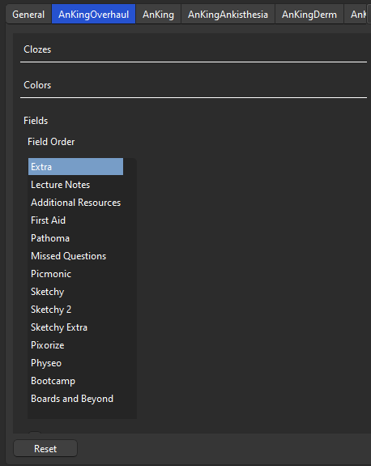
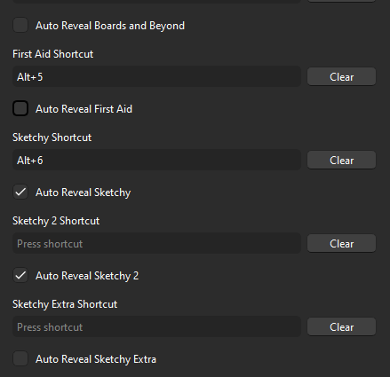

Kappale 3 AnKing Note Types (Easy Customization) -asetukset
Jotta AnKingOverhaul-pohjaa ja sen käyttökokemusta voi muokata, tulee ladata AnKingin tekemä yksi Anki-lisäosa eli AnKing Note Types (Easy Customization).Jos et ole sitä aikaisemmin ladannut, niin sen koodi on 952691989
3.1 Kenttien järjestys
Lisäosan avulla voi muuttaa kortin kenttien järjestystä siten, että sinulle tärkeimmät kentät ilmenevät ennen toisia, kun kertaat kortteja. Tämä nopeuttaa relevantin informaation löytämistä kortista.
Rankia (ja AnKingiakin) varten suosittelen seuraavaa järjestystä korttipohjan eri kentille.
Klinikkaan siirtyessä suosittelen vaihtamaan Sketchy ja Sketchy 2 -järjestyksen päinvastaiseksi (Sketchy 2 viittaa Sketchyn klinikkaorientoituneisiin videoihin, kuten internal medicine (IM) ja surgery)
Mene AnKingOverhaul -> Fields -> Vedä laatikot seuraavaan järjestykseen

3.2 Auto Reveal
Toinen tärkeä muutos on Hint Buttons-valikossa -> Auto Reveal Sketchy ja Auto Reveal Sketchy 2
- Auto Reveal Sketchy 2 voi jättää klikkaamatta siihen saakka, että siirtyy Sketchy 2 -videoihin (voi kuitenkin klikata jo preklinikassakin, ei sinänsä haittaa mitään)

Paina save -> olet valmis.